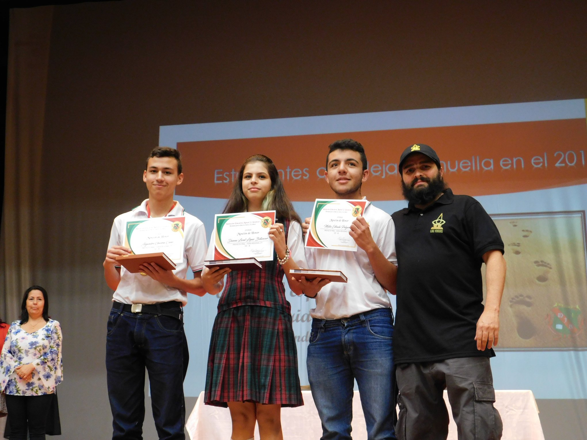
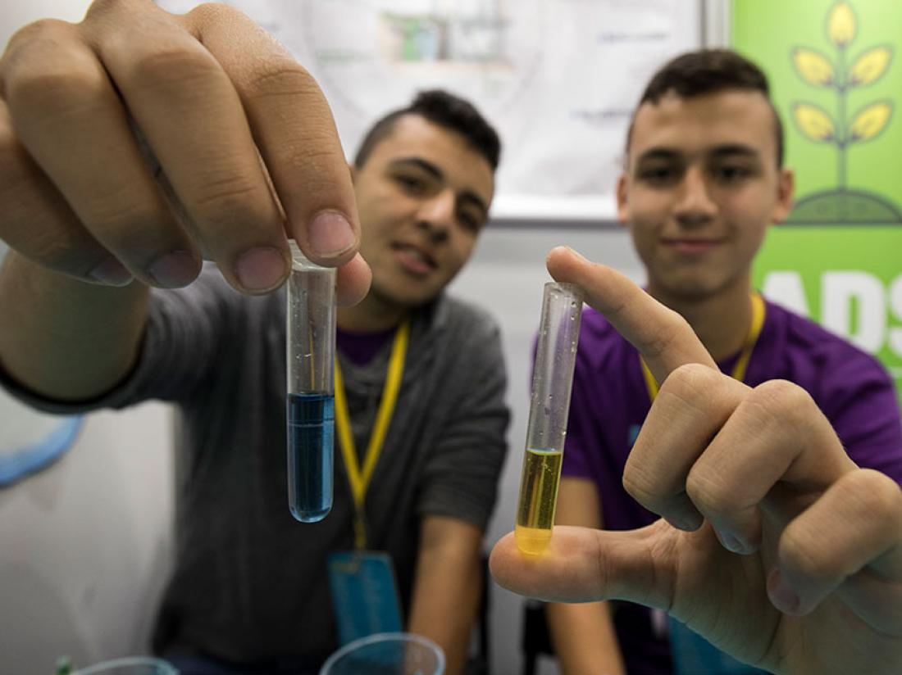
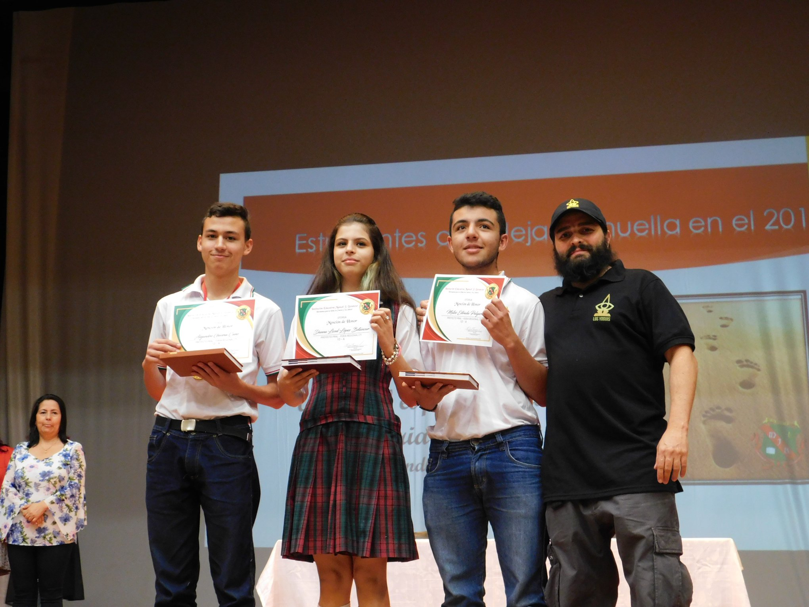
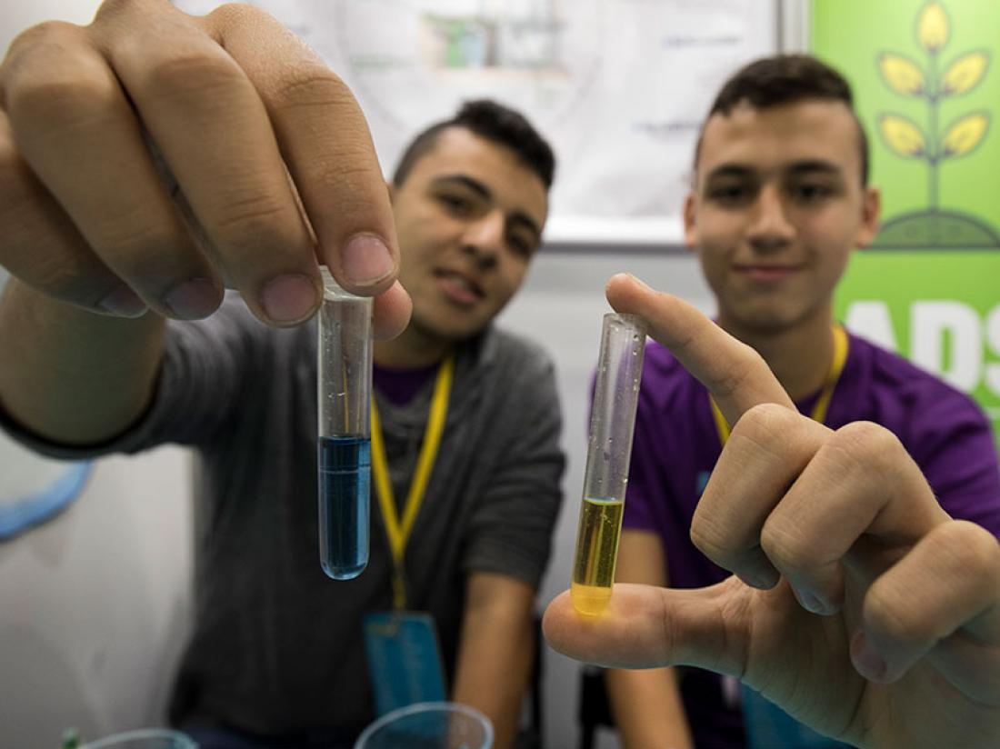

Feria CT+I 2019
Esta es una feria que se realiza por parte de la Alcaldía de Medellín, EPM y el parque explora, que promueve los proyectos de investigación escolar, mediante un concurso que se divide en varias fases y se premia a los ganadores.
Nuestro proyecto logro clasificar a la última ronda en esta feria, y estuvo exponiendo junto a otros proyectos durante una semana en el parque explora de Medellín, no logramos clasificar entre los 3 primeros, pero aun así fue una muy bonita experiencia para todos nosotros, aprendimos mucho y nos sentimos felices por haber llegado tan alto cuando nuestro proyecto era tan reciente.
Para más información visita: feriadelaciencia.com.co
 


